Maths Linear Equations in One Variable
Introduction
Introduction to Linear Equations
A linear equation is an algebraic equation in which each term is either a constant or the product of a constant and a variable. This variable is always single power form. A simple example of a linear equation with only one variable, x, may be written in the form: ax + b = 0, where a and b are constants and a ≠ 0.
These equations are called Linear Equations in one variable. Examples:
- 2x
- 5/4 (x-4)
- 3y-7
- x2 + 1 is an non-linear as the variable has power more than 1.
- 5xy + 10 is not a linear equation in one variable as there are two variables
For example, if a child has 2 chocolates of 10 rupees and a 20 rupee note, the total value can be calculated using the equation 2x + 20 = 2 * 10 + 20 = 40. Here ‘x’ is variable and is the value of the chocolate.
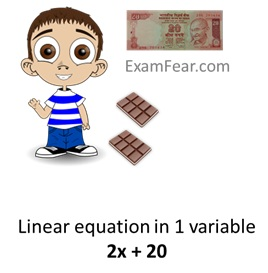
Another example, one child buys three toys (costing rupees 20 each) from a shopkeeper but gives only 5 rupees to him. The total value of items with child will be 3y - 5, where y is the cost of one toy.
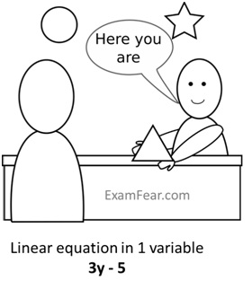
Algebraic Equations and Solutions
Algebraic Equations and Solutions
An algebraic equation is an equality involving variables. The expression on the left of equality is called LHS (Left Hand Side) and on the right is called RHS (Right Hand Side).
- From the above example, an algebraic equation is 2x + 20 = 40, where x is variable. Here 2x + 20 is LHS and 40 is RHS.
A Solution is the true value of the variables in the algebraic equations for which the equation holds true and LHS is equal to RHS.
- From the above example, algebraic equation is 2x + 20 = 40.
- For x = 10, 2 * 10 + 20 = 40. Or, 40 = 40. Since LHS = RHS, hence x = 10 is the solution.
- For x = 5, 2 * 5 + 20 = 40.Or, 30 = 40. Since LHS ≠ RHS, hence x = 5 is not the solution.
Solving Equations
Solving Equations having linear expression/equation on one side and number on the other
There are various methods to solve the algebraic equations:
1. By addition/subtraction and multiplication/division
Example, an algebraic equation is 2x - 3 = 7
Adding 3 both sides, 2x - 3 + 3 = 7 + 3 or 2x = 10
Dividing both sides by 2, 2x/2 = 10/2 or x = 5
2. By transposing
Example, an algebraic equation is x - 3 = 7
Transposing 3 to RHS, x = 7 + 3 or x = 10
3. Using combination of above 2 methods
Example, an algebraic equation is x/3 + 5/2 = -3/2
Transposing 5/2 to RHS, x/3 = -3/2- 5/2 or x/3= -8/2 or x/3 = -4
Multiplying both sides by 3, x/3 * 3 = -4 * 3 or x = -12
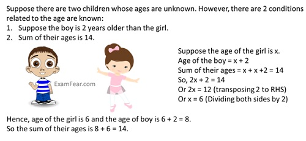
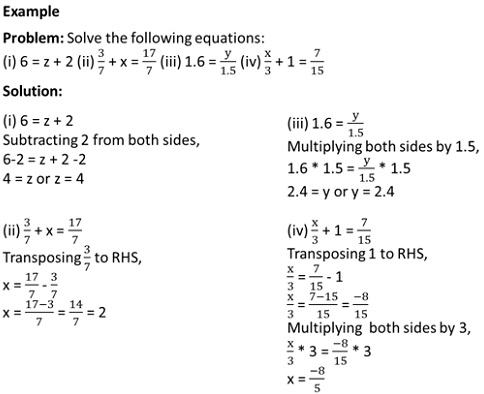
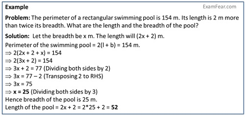
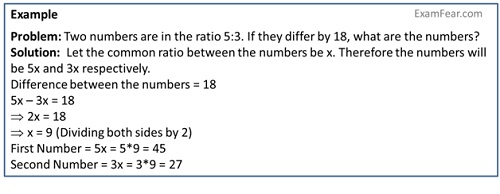
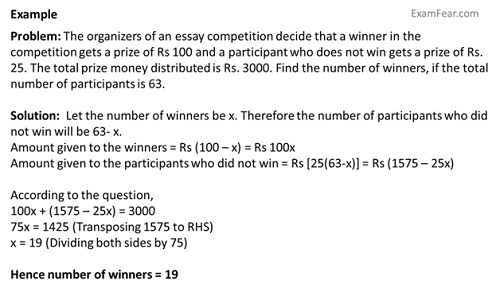
Solving Equations having variables on both sides
Solving Equations having variables on both sides
The equations having variables in both sides are solved similar to the above.
Example, an equation is 2x - 3 = x + 2
Adding 3 both sides, 2x - 3 + 3 = x + 2 + 3 or 2x = x + 5
Subtracting x from both sides, 2x - x = x + 5 - x or x = 5
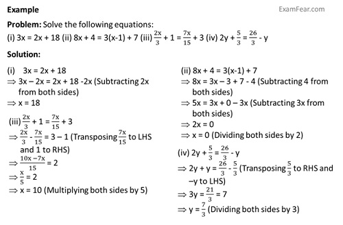
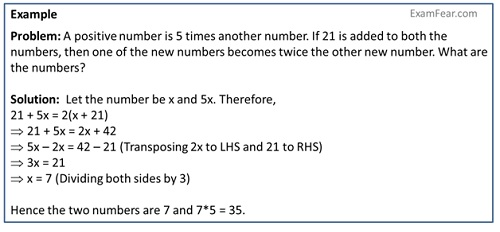
 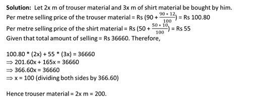
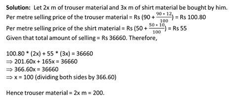
Reducing equations to simpler form
Reducing equations to simpler form
Equations can be reduced to simpler form by
- Removing the denominators of both the sides.
- Opening the brackets.
Example, an equation is (6x + 1)/3 + 1 = (x - 3)/6
Removing the denominators by multiplying both sides by 6 because it is the LCM of the denominators of both sides,
6*(6x + 1)/3) + 1*6 = ((x - 3)/6)*6
- 2(6x + 1) + 6 = x - 3
Opening the brackets,
- 12x + 2 + 6 = x - 3
- 12x + 8 = x - 3
Adding 3 both sides,
- 12x + 8 + 3 = x - 3 + 3
- 12x + 11 = x
Transposing 11 to RHS and x to LHS,
- 12x - x = -11
- 11x = -11
Dividing both sides by 11,
- x = -1
- Cross-Multiplication
Example, an equation is (x + 1)/(2x + 3) = 3/8
By cross-multiplication,the denominator of LHS gets multiplied with numerator of RHS and vice-versa,
So, 8 * (x + 1) = 3 * (2x + 3)
- 8x + 8 = 6x + 9 (opening the brackets)
- 8x - 6x = 9 - 8 (transposing 6x and 8 other sides)
- 2x = 1
- x = 1/2 (Dividing both sides by 2)
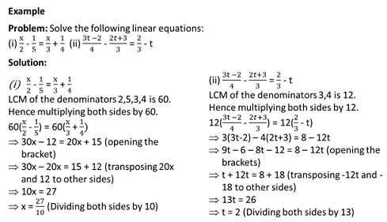